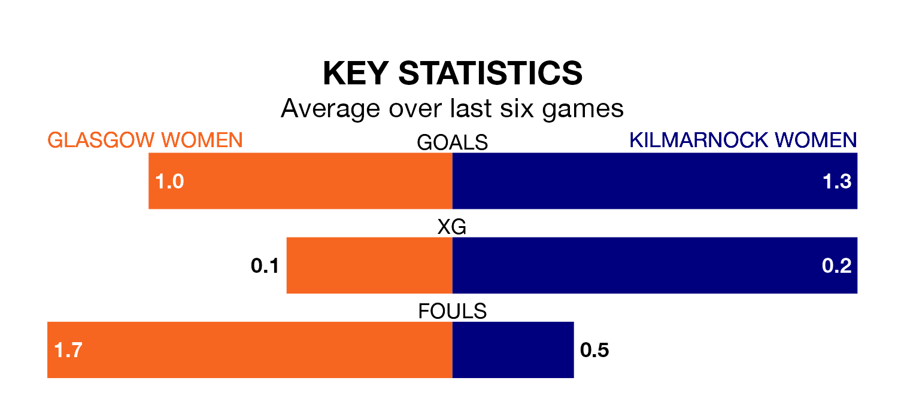

Mid-season relegation candidates Glasgow Women face a challenge against high-flying Kilmarnock Women at New Tinto Park on Sunday.
Glasgow Women are fifth in the SWPL 2 table, and have picked up four wins and five draws in their 16 games to date.
Kilmarnock, meanwhile, are second in the standings with 30 points, having won nine and drawn three, and are 10 points behind table-toppers Queen's Park W.
With 16 goals in 16 games so far this season, Glasgow are the league's second-lowest scorers with 1.0 goals per game. And they are conceding more than average, letting in 33 goals at a rate of 2.1 per game.
Kilmarnock, meanwhile, are above average scorers, with 2.4 goals per game, compared to a league average of 1.8. They have conceded 1.2 goals per game.
In the last 10 years, Glasgow and Kilmarnock have played each other on eight occasions. They won two each, and they drew four times.
On average, Glasgow scored 1.6 goals and Kilmarnock 1.6 in those matches.
Their last meeting was on November 26, when they played out a 1-1 draw.
The hosts are in mixed form in SWPL 2, with two wins and two draws from their last six games.
And also with two wins and two draws over that period, the away team's form is identical – they have both taken eight points from 18.
Glasgow's last match was on January 28, a 5-1 loss against Queen's Park Women, with getting the goal for Glasgow.
Kilmarnock beat Boroughmuir Thistle 2-1 last time out, also on January 28, with on the scoresheet.
Updated: 13:20 (UTC), 29/01/24